Into the Darkness
When I have clarified and exhausted a subject, then I turn away from it, in order to go into darkness again.
Carl Friedrich Gauss
Brad Evans Analysis
For this project, I aim to statistically analyze fantasy football prognosticator, "Yahoo! Noise" Brad Evans.Who is Brad Evans?
...and why are you harassing him?
Brad Evans is a colorful and entertaining fantasy football guru at Yahoo! Fantasy Sports. He writes several columns on Fantasy Roto Arcade, including one of interest, the Flames/Lames column, where he picks the most underrated and overrated fantasy players respectively and justifies why he thinks they will blow your mind/fail you miserably.
There are a few reasons why I am singling out Brad rather than doing a side-by-side comparison of all gurus (something I would still love to do).
This started out as a single question: "How often does Brad actually get it right?" I wondered this because I had followed Brad's picks before, thinking I had an ace up my sleeve. Those picks cost me $40 and my pride. There are many gurus who will give you "either/or" suggestions, rankings, and post watchlists of various types. But Brad publishes his picks in the vain of a stock picker service; something for lazy types who just want plug-n-play answers. These types of services rarely pan out, and in my 2012 fantasy season, I followed Brad's picks a little too closely and finished near the bottom.
So I began to wonder how good Brad actually is.
The second thing that sparked the need to analyze was Brad's Flames/Lames column which is in a fairly consistent format week to week, and seemed an obvious candidate for data wrangling.
Caveats and Apologies to Brad
To be fair up front, what Brad does is very difficult. Predicting the future using only intuition and past and present knowledge of the game is an uphill battle given the randomness inherent in football. This is not an affront on Brad Evans the person, but rather on Brad Evans the Flames/Lames column writer. When someone makes their work public, that work is subject to scrutiny. This work is no different and I am very open to your criticism!
A further caveat is the missing data I discuss below. While I don't think a few more blog posts or slightly more accurate NFL data would alter the results that much, the missing data aspect must be disclosed.
Gathering Data
Wrangling the data was a lot more painful than I thought it would be. I started this project on October 12th, 2015, at which point Week 4 of the 2015 season had finished up. I set my stake in the ground there, and did my best to go back to the beginning of time, or at least the beginning of the Flames/Lames column and collect everything Brad ever wrote about some improbable outcome. My biggest hurdle was Yahoo!'s terrible website. There's no way to go back to specific dates or article. They implemented infinite scrolling (not really infinite, btw), which prevents me from going back as far as I need.
At that point, I began Googling the Yahoo! blog articles (I love the irony in that). I also searched Brad's Twitter account, because he usually shares the link there when he has a new article out. Finally, the Internet Archive had a few pages in its database as well. I was fairly successful with these methods, but there a number of gaps in my analysis. Those gaps include:
- 2009, Week 8, Flames/Lames
- 2009, Week 9, Flames/Lames
- 2009, Week 10, Flames/Lames
- 2010, Week 12, Flames
- 2010, Week 14, Lames
- 2010, Week 15, Flames/Lames
- 2010, Week 16, Flames/Lames
- 2011, Week 6, Flames
- 2011, Week 12, Lames
These articles I cannot seem to find anywhere, so if you have them, feel free to send me the links, or submit a pull request on GitHub. Anything after 2015 week 4 is not present either, because that is when I began the project. Wrangling the data would have taken a lot of effort to automate, so keeping these up to date week to week seems like overkill for a simple analysis project.
Once I had the Flames/Lames articles, I saved them all to my local drive. Then I skimmed them down to just a text representation into two files for each year/week, one called "flames.txt" and one called "lames.txt". I corrected for inconsistencies and got everything into a parsable format. Thankfully, Brad was fairly consistent from year to year. I made minor corrections to each Flames/Lames post to aid in parsing.
From week to week, Brad grades himself, but I noticed he has kind of a weird grading scale, and his grades are a screenshot of an Excel sheet, which doesn't help me much. So to be more accurate, I decided I needed actual NFL data. That doesn't come easy or cheap, so I had to get it myself. I devised a scraping method for NFL.com and created a SQLite database. You can download my NFL Database here. It only contains offensive player stats, and it's missing a lot of information. If I were starting from scratch, this is probably the biggest adjustment I would have made.
Analysis
The analysis I ran was fairly straightforward. I started off by just viewing some of the raw details about his posts alone.
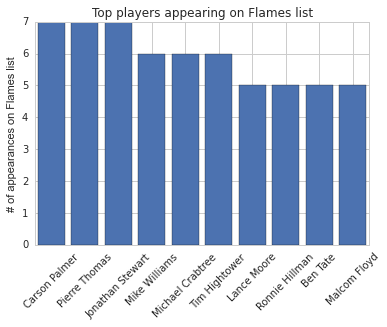
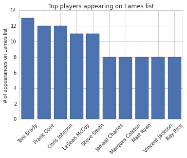
Brad clearly loves Carson Palmer and hates Tom Brady. I can understand that.
Another thing I wondered was whether Brad targeted certain individuals in both categories (Flames and Lames).
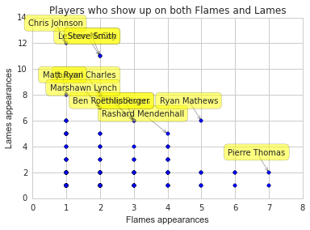
It's a little cluttered, but we can see that Ryan Matthews is the most evenly distributed, with 5 Flames and 6 Lames
appearances. Brad has talked about Matthews as his man-crush often, but it's nice to see he doesn't let him off the hook.
Chris Johnson has made 12 appearances in the Lames column, and just one in Flames. This is probably deserved.
CJ2K, or "CJ2Lame" as Brad used to quip, ruined a lot of people's fantasy hopes year after year (I am in that group).
Looking at the spread of the data, the Flames look to be hovering closer to Lame territory than I would like. The red dot is the mean, and the red line is the median.
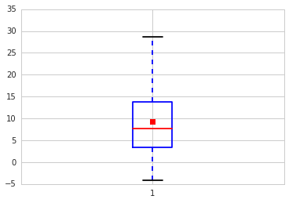
Lames has a similar story, but one thing that didn't make it on the chart here, is Doug Martin's 2012-11-04 game
against the Raiders where he put up a ridiculous 51 fantasy points. Brad had him on the Lames list. That was a major outlier, however. A true Black Swan.
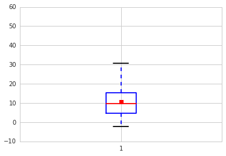
Next, I wondered what the distribution of actual fantasy points for each category looked like. I hypothesized that if Brad was right more often than wrong, then the distributions, plotted
on top of each other should have two humps side by side. The peak of the Lames should be closer to 0, and the peak of the Flames should be toward the teens.
(The Flames are in Red, and the Lames are in Blue)
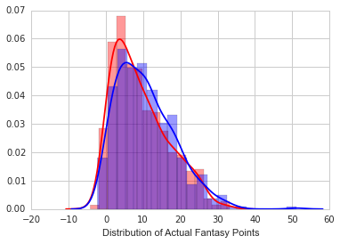
But what we have here, is two similar distributions, with the Lames favoring larger scores. Hrm. Could Brad be wrong a lot of the time?
"Winning" is a relative term here, because fantasy points are a continuous random variable, not a Bernoulli trial. We can, however, draw a line in the sand and turn it into Bernoulli
trials. Let's take into account what Brad is doing here. He is looking for undervalued and overvalued players. To me, if a player is under 50% started in Yahoo! leagues and can score two
touchdowns, that is a win. So here, I chose 12 or more actual fantasy points as a win for the Flames. Likewise, I would call less than 10 points a bust for most players, particularly if
they are generally regarded as a "stud".
Using these metrics, we get an answer.
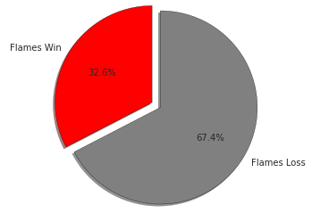
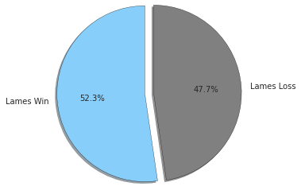
Obviously, Brad is a much better short seller than a buyer. Things get a little worse when you look at his "Shocker Specials" (usually around 0% to 5% started) by themselves.
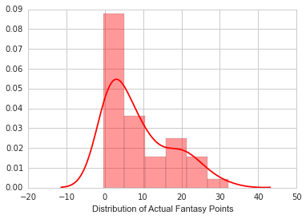
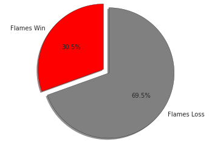
Note: Shocker Specials only come in the Flames variety.
These are actually better than I would expect. Start percentages that low indicate extreme undervaluing. If you were desperate to make a play, you've got a 30% chance of pulling it off with a
Shocker Special.
Finally, I wanted to know what his year-over-year percentages looked like.
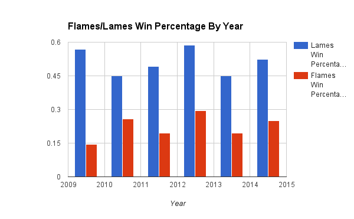
Flames never seem to crack the 30% range. If you're wondering how his total average is 32.6%, it's because his 2015 picks up to week 4 had been really good. Like, 71.4% good. But with only
4 weeks in the 2015 season, I can't compare it to the other years which are nearly complete (minus the aforementioned gaps in data).
Conclusion
I'm actually surprised by my findings. Brad is a really good short seller. It would actually behoove you to at least keep an eye on his Lames column. Over half of all players on his Lames list score below 10 fantasy points. Those are pretty good odds, considering Brad only targets players who are at least 50% started in Yahoo! leagues. If you're starting one of his Lames players, you should do so with caution.
His Flames, however, should be considered more of a desperation play. If you're in dire straits though, the Shocker Specials do nearly as well as his regular Flames, so they may be worth the 30% dice roll.